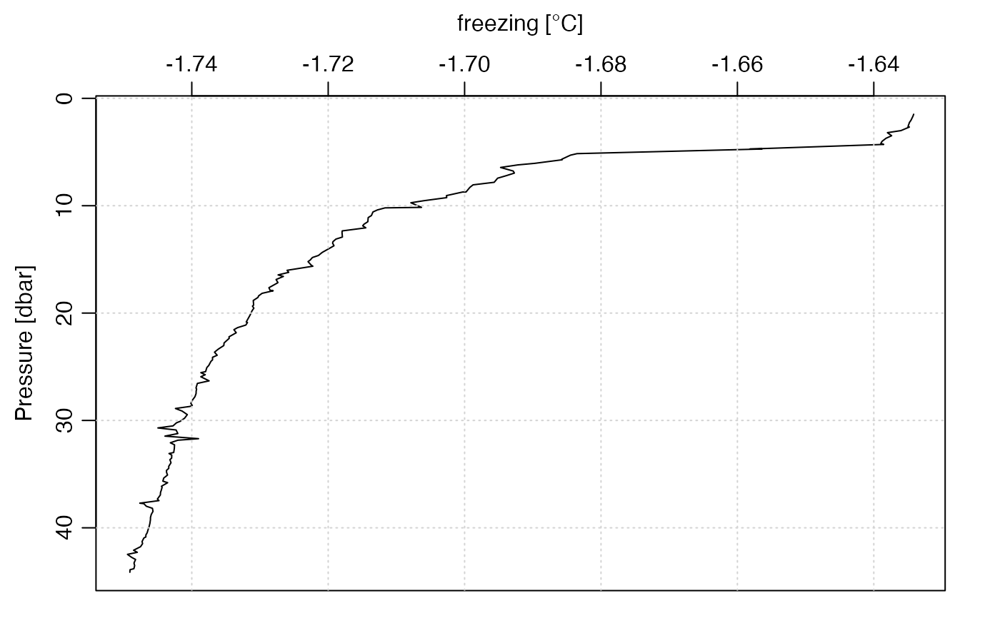

Create a copy of an object in which some element of its
data slot has been altered, or added.
oceSetData(object, name, value, unit, originalName, note = "")an oce object.
String indicating the name of the data item to be set.
Value for the item.
An optional indication of the units for the item. This has three possible forms (see “Details”).
Optional character string giving an 'original' name (e.g. as stored in the header of a data file).
Either empty (the default), a character string, or NULL,
to control additions made to the processing log of the return value. If
note="" then the an entry is created based on deparsing the function call.
If note is a non-empty string, then that string gets added added
to the processing log. Finally, if note=NULL, then nothing is
added to the processing log. This last form is useful in cases where
oceSetData is to be called many times in succession, resulting
in an overly verbose processing log; in such cases, it might help
to add a note by e.g. processingLog(a) <- "QC (memo dek-2018-01/31)"
An oce object, the data slot of which has
been altered either by adding a new item or modifying an existing
item.
The trickiest argument to set is the unit. There are three
possibilities for this:
unit is a named or unnamed list() that contains two items.
If the list is named, the names must be
unit and scale. If the list is unnamed, the stated names are assigned
to the items, in the stated order. Either way, the unit
item must be an expression() that specifies the unit,
and the scale item must be a string that describes the scale. For
example, modern temperatures have
unit=list(unit=expression(degree*C), scale="ITS-90").
unit is an expression() giving the unit as above. In this
case, the scale will be set to "".
unit is a character string that is converted
into an expression with parse(text=unit),
and the scale set to "".
Other things related to the data slot:
oceDeleteData(),
oceGetData(),
oceRenameData()
data(ctd)
Tf <- swTFreeze(ctd)
ctd <- oceSetData(ctd, "freezing", Tf,
unit=list(unit=expression(degree*C), scale="ITS-90"))
plotProfile(ctd, "freezing")
